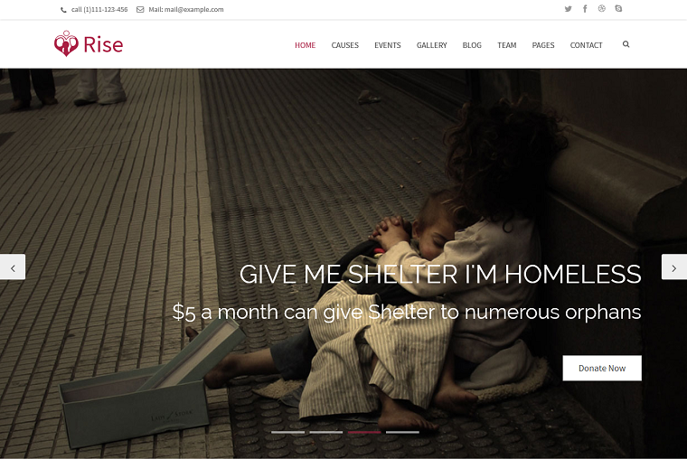
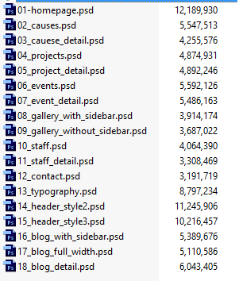
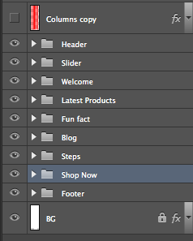

Created: 30.06.2014
By: Wow Themes
Email: support@wow-themes.com
Thank you for purchasing my template. If you have any questions that are beyond the scope of this help file, please feel free to email via my user page contact form here. Thanks so much!

“Rise - Charity PSD Template” is a awesome design idea for website of Creative Corporate, Corporation, Organization, Community, Company Profile, Personal Portfolio, News, Creative Blog, Gallery Photo and more… “Rise” is a creative modern and Unique multi-purpose PSD Template with 31 Unique Home Page layouts. Template designed for Wordpress, Joomla and other systems. Super Clear and Clean Layout! This is a great choice!
63 PSD files included – The design is very elegant and modern, and also very easy to customize.
Thank you for purchase this product. We listed below all our PSD files.

Used custom Google fonts listed below;

In order to edit the file, you need to have Adobe Photoshop installed on your system, and the fonts mentioned in the credits installed.
As you can see on the right, the layers are well organized and gropued into folders, which make editing very easy.
So, all you have to do, is select the layer from the right, and then edit it with Adobe Photoshop.
That's all! Enjoy.
Please remember you have purchased a very affordable template and you have not paid for a full-time web design agency. Occasionally we will help with small tweaks, but these requests will be put on a lower priority due to their nature.
Support is also 100% optional and we provide it for your connivence, so please be patient, polite and respectful.
Before seeking support, please...
Resources used in Design - Also a thanks to all the awesome resources I've used/purchased for the development of this template.
You can find the version history (changelog.txt) file on Rise-psd-full.zip folder
Once again, thank you so much for purchasing this template. As I said at the beginning, I'd be glad to help you if you have any questions relating to this plugin. No guarantees, but I'll do my best to assist. If you have a more general question relating to the template on ThemeForest, you might consider visiting the forums and asking your question in the "Item Discussion" section.
Wow Themes Team